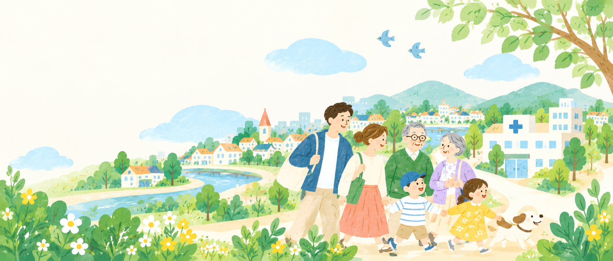

医療・在宅療養につなぐ
病院・診療所・歯科・薬局、在宅療養に関わる医療資源を探します。

相談先だけでなく、問い合わせ、情報の受け取り、手続き、防災情報まで、次の行動につながる入口をまとめています。
詳しい説明は各ページにまとめ、トップページでは入口を分かりやすくしています。
制度名や窓口名が分からなくても大丈夫です。今の悩みに近いものを選ぶと、諫早市・長崎県の地域窓口、電話、Web、SNS・チャット、手話・文字で利用できる相談先を案内します。
相談先の名前ではなく、「何に困っているか？」から選べます。
地域の窓口を優先し、国や公的機関の相談サイト、公的機関が公式に案内している相談先も表示します。
「何につなぎたいか？」から、公的な検索システムや地域資源へ移動できます。現在の受入状況や個別対応の可否は、各事業所へ直接ご確認ください。
住民向けの「困りごとから探す」とは別に、専門職が連携先を探すための入口です。公的データベースと諫早市の地域情報を中心に掲載しています。
病院・診療所・歯科・薬局、在宅療養に関わる医療資源を探します。
訪問・通所・短期入所・施設など、介護サービス事業所を探します。
相談支援、就労支援、児童発達支援、放課後等デイサービスなどを探します。
保育所・認定こども園等や、子どもの発達・福祉サービスを探します。
病気を抱えて働く人や、支援する医療機関・企業向けの支援機関を探します。
介護保険サービスだけでなく、通いの場、生活支援、認知症支援など地域資源を探します。
専門職の方へ：公表情報は連携先を探すための手がかりです。空き状況、新規受入、看取り・医療処置・送迎等の個別対応は変わるため、利用前に各事業所へ直接ご確認ください。
お薬手帳、かかりつけの医療機関、家族の緊急連絡先を確認しておきましょう。持病や使用中の薬も、家族と共有しておくと安心です。
厚生労働省、消防庁、PMDA、長崎県、諫早市などが公表する情報を確認しています。制度や受付時間は変わることがあるため、最新情報は各機関の公式ページでご確認ください。
情報確認日：2026年9月28日